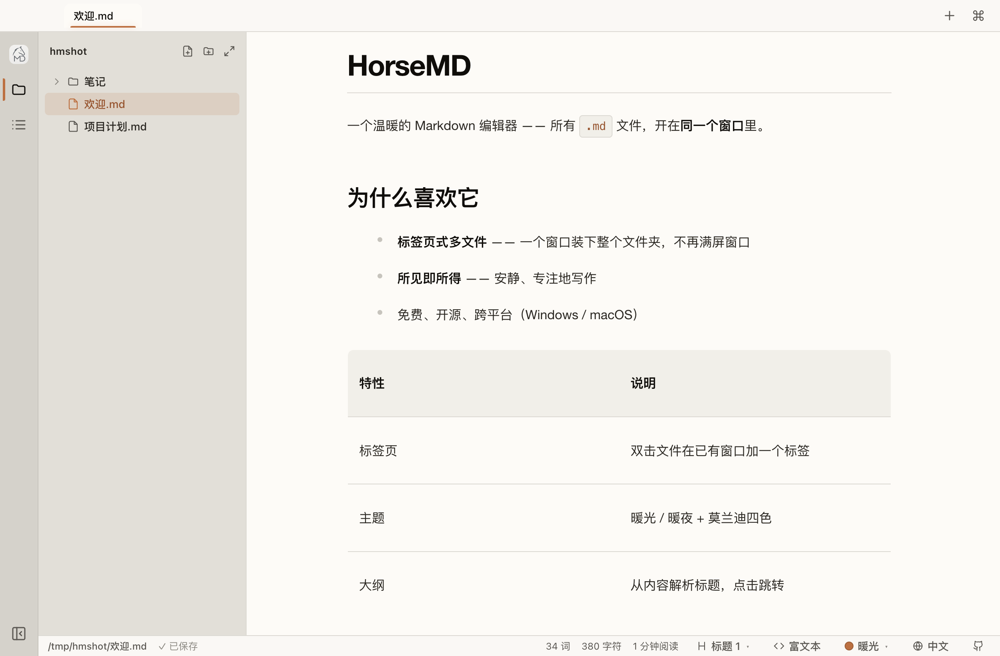
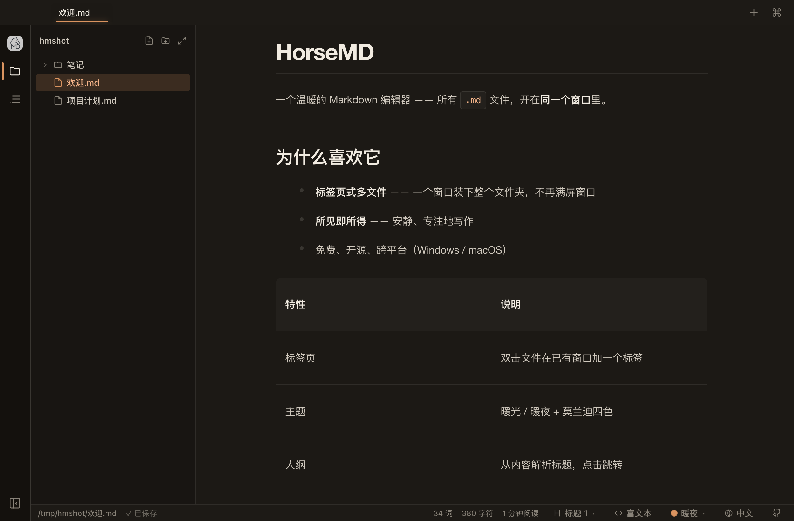

标签页
双击一个文件，是多一个标签，不是多一个窗口。
Ctrl/⌘ Tab免费 · 开源 · 不要账号
一个免费的 Typora 平替，但不止于此。
构建未签名 — Windows：更多信息 → 仍要运行 · macOS（Apple 芯片 / Intel 均可）：右键 → 打开 · 安卓：安装 APK 时允许"未知来源"

WYSIWYG· 标签页· 文件树· ⌘P· LaTeX· EN / 中文· 6 套主题
双击一个文件，是多一个标签，不是多一个窗口。
Ctrl/⌘ Tab整个文件夹挂在侧边栏，新建、重命名、删除都不用切出去。
Ctrl/⌘ B打字就渲染。表格、代码高亮、LaTeX、任务清单都认。
/复制自带格式，粘进微信公众号、邮件、Notion 都不丢样式。
Ctrl/⌘ C